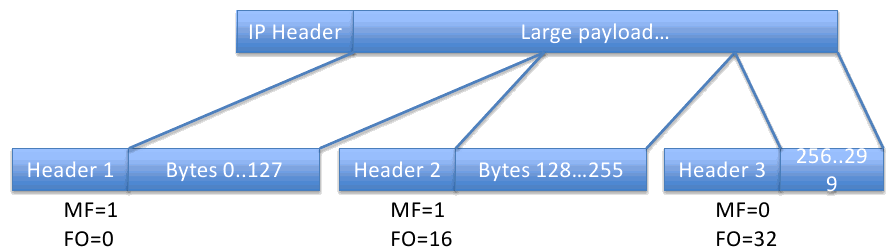

Applications are powered by a multitude of underlying technologies.
Its hard to innovate at the IP level, since the internet as whole depends on standardisation there.
The IP protocol and how it interacts with the applications which user it.
Designed to connect heterogenous networks:
Telephone company’s and networking people had opposing ideas about how a network should operate.
All hardware on a network has a 48 bit static address (MAC Address)
Ethernet is 802.3 (whereas 802.11 is WiFi)
Uses broadcast address to send packets to all devices.
Originally all ethernet networks (before switching) were by their nature broadcasting packets to all devices. Each device determines which packets are for them, however this behaviour would need to be maintained when packet switched networks became popular.
The exact same broadcast packet is send directly back to the querying device from the target host.
Chances are there are multiple packets which need to be sent to the same devices. An ARP cache remembers the resolved addresses.
The ARP cache can potentially become very large, as there would be a single entry for each device on the network to which packets have been sent.
Since IP address may change, some sort of eviction policy is need to clear old potentially incorrect ARP cache entries. Unused enteries could be evicted after a certain time period.
Some networks need a virtual circuit to be established before data may be sent. In these situations an IP is mapped to a virtual circuit and may require:
This process is the same as with ARP cache.
Sometimes it is useful to use the internet as a subnetwork. For example VPN Virtual Private Network:
In these cases we want to send packets as if we were on the network the VPN tunnel is connected too. Hence we are using the internet as a subnetwork to get the packets there.
IP allows datagram sizes of up to 64Kbytes, but the physical networks often only support smaller frame types (Maximum Transmission Unit, MTU), for example:
| Medium | MTU |
|---|---|
| Ethernet | 1500bytes |
| Dialup PPP | ~256bytes |
Thus if the IP is asked to transfer data larger than the MTU that data must be divided into fragments for transmission. IP headers contain some information to help with this process:
Advanced Marcus: Fragmentation can occur when data is passed to the network layer from the transport layer above in an NSDU (Network Service Data Unit) or when a packet is passed to a node on the network layer in an NPDU (Network Protocol Data Unit) more commonly referred to as a packet.
Each fragment is a new IP packet which has its own header with the original source and the same destination.
The identity field for related fragments is the same, thus fragments of the same data can be identified.
The fragment offset describes where in the original data this fragment belongs.
The more fragments flag is set on all but the last fragment, and indicates that there are more fragments after it.
The task of fragmenting data into packets may be done by the sending host or an intermediately router.
IP packet fragmentation can be prevented (at the cost of dropping the packet) by settings the do not fragment flag. This can be useful in order to dynamically discover the MTU of a path of links. By reducing the MTU size from a large number until the packet succeeds in reaching the destination without being dropped and sending back an ICMP packet explaining that a dropped packet has occurred.
Done only by the ultimate destination of the packet, after checking the header checksum, destination, and ID before any more processing
Maintains a pool of fragments which are discarded after a time-out. If all fragments of a datagram are received the datagram is reassembled and handled as before.
If you lose one segment you lose the entire message. This bad if segment loss is likely or the number of segments is large.
For example NFSv2 used UDP, NFSv3 uses TCP. They made this move mainly because the block sizes when from 8K to 32K meaning far less segments and far less chance of loosing everything.
v1.0 was IP/PPP/RFCOM/L2CAP
v2.0 changed to BNEP in order to make Bluetooth look like Ethernet
Technologies made themselves look like ethernet since many companies had built their protocols directly on Ethernet, and it keeps things simple.
IP is about interconnecting networks, which is the key to success as new technologies can be adopted
The subnetworks can be heterogeneous, adapted for different circumstances